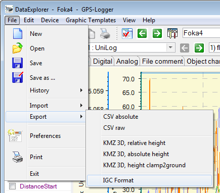
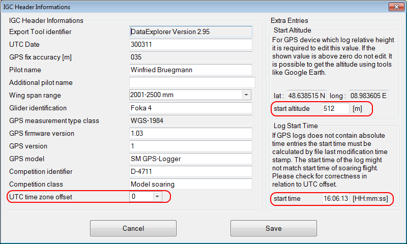
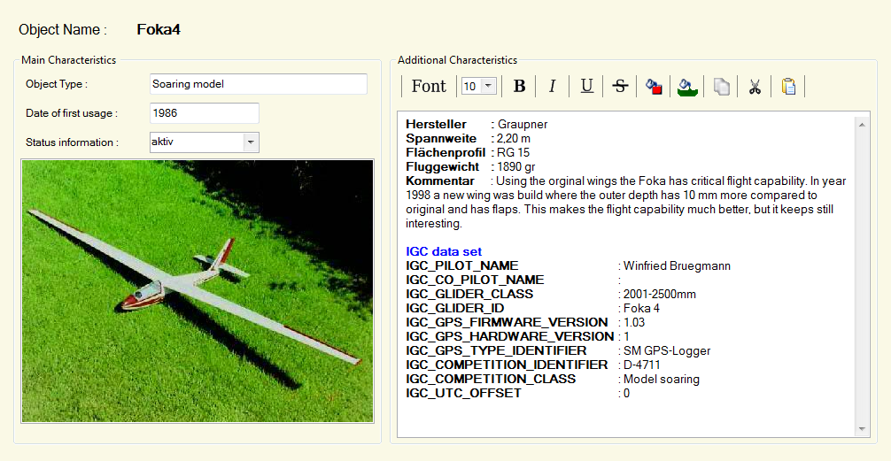

If the current displayed record set contains GPS (global position system) data, it is possible to export a International Gliding Commission (IGC) file. An IGC file is prerequisite to join the ModelGliding-OLC On-Line-Contest. The globe icon will change its visibility to signal IGC export capability. You can also find it while opening the file export menu.

Selecting the IGC Export menu will open a IGC format export dialog to query basic header information.

This dialog is capable to take over IGC header information from object characteristics, if object selected and data available. Anyhow this dialog must be filled out as complete as possible. The start altitude and start time need to be checked in all cases.
IGC data set located in object characteristicsIGC_PILOT_NAME : Pilot name IGC_CO_PILOT_NAME : Co-pilot name, if applicable IGC_GLIDER_CLASS : Wing span range IGC_GLIDER_ID : Glider-name or -identifier IGC_GPS_FIRMWARE_VERSION : 1.03 IGC_GPS_HARDWARE_VERSION : 1 IGC_GPS_TYPE_IDENTIFIER : SM GPS-Logger IGC_COMPETITION_IDENTIFIER : D-4711 IGC_COMPETITION_CLASS : Modelgliding IGC_UTC_OFFSET : 0
The picture below shows how an IGC data set can be placed in a object characteristic.

Hint : Your UTC time offset can be looked up here.
{kind=link}